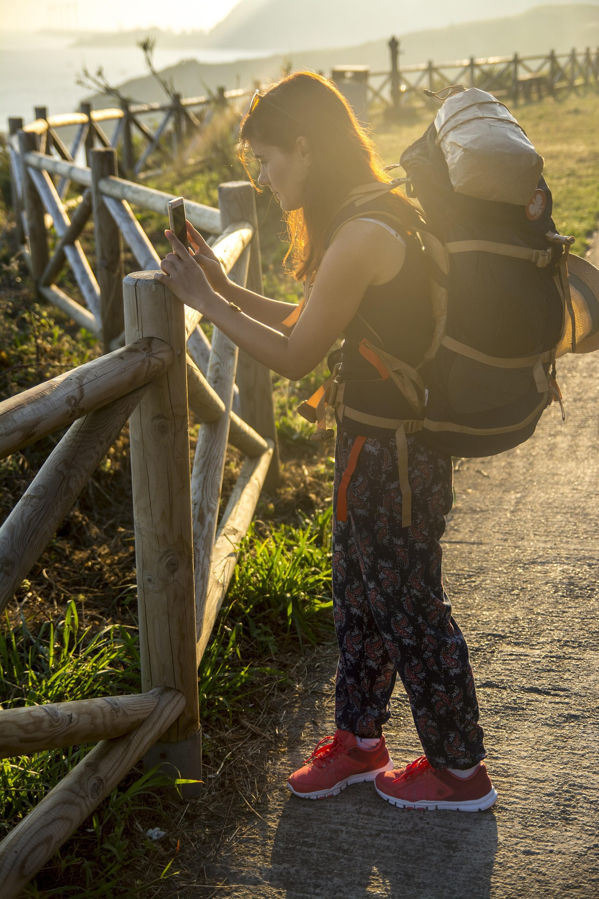

Sara · Easy Camino Santiago
Tu experta en el Camino de Santiago
¿Te llamamos gratis?
Déjanos tu número y te llamamos en menos de 24h para asesorarte sin compromiso.
Tu número solo se usará para llamarte. Sin spam.
Tu experta en el Camino de Santiago
Déjanos tu número y te llamamos en menos de 24h para asesorarte sin compromiso.
Tu número solo se usará para llamarte. Sin spam.

Pedalea hasta la Catedral. Desde Sarria completas los 200km mínimos para la Compostela en 3 días. Desde Ponferrada, en 5-6 días con el paisaje del Bierzo y Galicia. Organizamos todo para que tú solo te preocupes de pedalear.
Hacer el Camino de Santiago en bicicleta es una experiencia completamente diferente a hacerlo a pie. Los paisajes cambian más rápidamente, puedes cubrir más kilómetros en menos días y la sensación de libertad sobre la bici en los caminos gallegos es difícil de describir. Para muchos ciclistas, el Camino en bici es el viaje de su vida.
La Oficina del Peregrino exige un mínimo de 200km en bicicleta para otorgar la Compostela Ciclista. El punto más popular para empezar es Sarria (que tiene exactamente 200km hasta Santiago por el Camino Francés), aunque muchos ciclistas prefieren comenzar en Ponferrada (310km) para disfrutar también del espectacular Bierzo y el Cebrero. Desde Lugo, nuestra ciudad, podemos organizar el traslado a cualquiera de estos puntos de inicio.
El Camino Francés en bicicleta sigue en gran parte las mismas sendas que los peregrinos a pie, con pistas de tierra y caminos forestales —recomendamos bicicleta de montaña o gravel, no de carretera—. El desnivel acumulado es considerable, especialmente en la subida al Alto do Poio entre Triacastela y O Cebreiro, pero está muy bien dentro del alcance de cualquier persona con condición física razonable y entrenamiento previo.
El recorrido mínimo para la Compostela Ciclista. 200km en 3 jornadas de ciclismo por el Camino Francés gallego.
Una jornada larga pero muy bonita. Desde Sarria el Camino sube hacia O Cebreiro (si partes desde ahí) o bordea colinas gallegas con vistas espectaculares. Pasas por Portomarín —con su embalse y su iglesia románica trasladada piedra a piedra— antes de llegar a Palas de Rei. Terreno mixto: pista de tierra, asfalto y algún tramo de camino de piedra.
La etapa más suave del recorrido ciclista. El Camino atraviesa Melide —obligatorio parar a comer pulpo a feira— y continúa por Arzúa, capital del queso. Terreno ondulado, menos desnivel que el día anterior. O Pedrouzo marca el inicio del último empuje hacia Santiago.
La llegada. Etapa corta y emocionante: los últimos 20km del Camino. El bosque del Monte do Gozo, la primera vista de las torres de la Catedral y la entrada triunfal por la Rúa do Franco hasta la Plaza del Obradoiro. El abrazo al Apóstol y la Compostela Ciclista merecida.
Desde Ponferrada tienes 310km hasta Santiago atravesando el Bierzo, la impresionante subida al O Cebreiro (1.300m), Lugo —nuestra ciudad— y todo el Camino gallego. Una aventura más completa para ciclistas con más días disponibles. Consúltanos y te preparamos el itinerario a medida.
Todo organizado para que tú solo pienses en pedalear.
Traes tu bici, nosotros nos encargamos del alojamiento y la logística
Incluye alquiler de bicicleta de montaña o gravel para todo el recorrido
Alojamiento en hotel o pensión con hab. privada y bici de calidad incluida
Precios desde Sarria (3 días). Consulta paquetes desde Ponferrada (5-6 días). Precios por persona. IVA incluido.
MTB o gravel de calidad, revisada antes del viaje, con casco, luces y kit de reparación básico.
Albergues y pensiones con zonas de lavado y almacenaje seguro para bicicletas en cada etapa.
Recogemos tus alforjas y equipaje cada mañana y lo entregamos en el siguiente alojamiento.
Track GPX del Camino Francés en bicicleta, optimizado para evitar tramos impracticables en bici.
La credencial específica para peregrinos ciclistas, para sellar en cada etapa y obtener la Compostela.
Si tienes un pinchazo irrecuperable, un problema mecánico o cualquier imprevisto, llámanos.
Lo más recomendable es una bicicleta de montaña (MTB) o una bicicleta gravel. Las bicicletas de carretera no son adecuadas porque hay tramos de camino de tierra, piedras y sendas forestales, especialmente en el tramo gallego. Lo mínimo sería una bicicleta híbrida con ruedas de al menos 35mm. Si alquilas con nosotros, te proporcionamos la bici correcta para el Camino.
La Oficina del Peregrino exige un mínimo de 200km en bicicleta para otorgar la Compostela Ciclista. Por eso Sarria es el punto de partida más común: desde allí hasta Santiago hay exactamente 200km por el Camino Francés. Si sales de A Coruña son unos 70km (no suficiente), desde Ponferrada unos 310km. Siempre verifica la distancia oficial antes de empezar.
Sí, las bicicletas eléctricas sin motor de gasolina (pedaleo asistido) están permitidas en el Camino de Santiago. Sin embargo, la Oficina del Peregrino solo otorga la Compostela Ciclista si se ha completado el trayecto con pedaleo real (con o sin asistencia eléctrica, pero sin motor independiente). Las e-bikes hacen el Camino accesible a personas con menor condición física o edad avanzada. Consúltanos disponibilidad de alquiler de e-bikes.
No hace falta ser ciclista de competición, pero sí tener una condición física razonable. En 3 días desde Sarria pedalearás entre 60 y 72km diarios con desnivel moderado. Si habitualmente sales en bici los fines de semana y puedes hacer 40-50km sin problema, estás preparado. Si no tienes práctica ciclista reciente, recomendamos salir desde Ponferrada en 5-6 días para un ritmo más cómodo.
Sí, en las principales localidades del Camino Francés hay talleres de bicicleta o tiendas de deportes. Sarria, Portomarín, Palas de Rei, Melide y Santiago tienen servicio técnico. Para el resto de localidades, es importante llevar un kit básico de reparación: cámara de repuesto, parches, desmontables y una pequeña bomba. Nosotros incluimos este kit en los paquetes con alquiler de bici.
3 días, 200km, una Compostela Ciclista. Cuéntanos si traes tu bici o necesitas alquiler y organizamos todo.